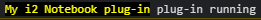

Creating an Angular plug-in
This is a long tutorial that will take a couple of hours to work through. It's designed to function more like a complete hands-on workshop than a simple 'Hello World' example, and takes you from nothing to creating a working (but simplified) replacement for the Record Inspector, using Angular.
The tutorial covers the following concepts:
- Configuring Angular correctly
- Starting a plug-in project
- Running the i2 Notebook plug-in development proxy
- Creating and surfacing commands in the application ribbon and the pop-up menu
- Subscribing to change and selection events, and using them to control the state of commands
- Creating a tool view
- Accessing chart data
- Accessing user data, such as theme choice and locale
- Formatting, localization, and right-to-left language support
- Common mistakes when writing plug-ins, with solutions for fixing them
And it does so as you build the example through these stages:
- Create the simplest possible plug-in, without a custom user interface. We'll get it working in a development environment, and then add a ribbon command that accesses chart data and sends some of it to an external website for viewing.
- Create a custom tool view, and learn about configuring Angular paths and working with a Content Security Policy.
- Do some basic styling and theming, and look at integrating the i2 Notebook web client's change notifications with Angular's change detection system.
- Access property data, learn about the facilities that the API provides to assist with consistent formatting, and display images and links to 360 views.
- (Briefly) cover issues with right-to-left and bidirectional text.
- Add record-navigation support to the tool view, and learn about restrictions on when you can access i2 Notebook data and best practices for working within those constraints.
- Learn about persisting tool view state, so that the user interface doesn't reset itself when being docked or floated.
- Remove the built-in Record Inspector and replace it with our own.
- Deploy our completed plug-in onto an i2 Analyze server.
You can find a full version of the source code for this tutorial in the samples/angular-plugin folder.
Prerequisites
This tutorial requires a running instance of i2 Analyze on which you have permission to use the i2 Notebook web client.
To follow the tutorial, you must install at least version 12 of Node.js on your development machine. For downloads and more information about Node.js, visit the project website at https://nodejs.org.
You'll also need to install the Angular CLI, which you can do by following the instructions at https://angular.io/cli.
The tutorial also requires you to create GUIDs for a number of its elements.
The project files use some sample fixed GUIDs (00000000-0000-0000-0000-000000000001, 00000000-0000-0000-0000-000000000002, and so on), but you should always create real GUIDs for real projects.
Note: A suitable GUID generator is available online at https://www.guidgenerator.com.
Create a basic UI-free plug-in
A basic i2 Notebook plug-in has the same requirements as a more complex one: in the plug-in directory, you must create the manifest and the entry point that enable the i2 Notebook web client to load and integrate your plug-in.
The first part of this tutorial covers those requirements, and also explains how to set up both your development environment and a local Node.js server.
- Create an empty
Angular
application with
ng new. For example:ng new plugin-ng- The command will ask whether you want to use Angular routing. You don't need it for this tutorial, so choose No (the default).
- It will also ask which stylesheet technology you want to use.
Any is fine, but raw CSS builds more quickly than the others, and for this tutorial we'll use
css. - Don't start the server yet.
- Change directory to the new plug-in.
For example:
cd plugin-ng Add the i2 Notebook SDK package:
npm install @i2analyze/notebook-sdkThe package contains a type library that enables inline assistance in your IDE.
Now you're in position to write the plug-in itself, starting with the manifest. Using an IDE such as VSCode, create a file named
plugin.jsoninsrc, with the following contents:{ "$schema": "https://i2group.github.io/notebook-sdk/schemas/plugin-manifest.json" }The schema enforces the structure and content of the file. For more information, see the plug-in manifest documentation.
Continue to populate the manifest with values for
"name","pluginId", and"pluginVersion"; and set"entryPointUrl"to"./entrypoint.js". For example:"name": "My i2 Notebook plug-in", "pluginId": "00000000-0000-0000-0000-000000000001", "pluginVersion": "1.0.0", "entryPointUrl": "./entrypoint.js"Next, we can create the entry point. Add a file named
entrypoint.jsto thesrcdirectory, and populate it:// @ts-check /// <reference types="@i2analyze/notebook-sdk" /> async function main() { const api = await notebook.getEntryPointApi('00000000-0000-0000-0000-000000000001', '1.1'); api.logger.info('plug-in running'); api.initializationComplete(); } void main();Through this code, the plug-in retrieves the version of the entry point API that it wants to use, and uses it to declare that it has finished initializing. The GUID here must match the one in the plug-in manifest.
If you enter the code by hand, you'll see how the type library provides auto-completion as you go.
Modify
angular.jsonto configure the Angular builder to treatplugin.jsonandentrypoint.jsas assets: to"projects">"plugin-ng">"architect">"build">"options">"assets", add"src/entrypoint.js"and"src/plugin.json".- Back on the command line, start the
Angular
project in development mode:
npm start. - Make a note of the connection address. For example,
http://localhost:4200. We'll need that to connect to, and reference, our plug-in. - Navigate to the project in a web browser.
You should see
an Angular
demonstration page.
Confirm that
plugin.jsonandentrypoint.jsare served correctly from their respective paths (for example, http://localhost:4200/plugin.json and http://localhost:4200/entrypoint.js).
Test the plug-in in the i2 Notebook web client
While we're developing and testing a plug-in, we won't deploy the plug-in directly to the i2 Analyze server. Instead, we'll use the i2 Notebook SDK plug-in development proxy to add our plug-in to an existing i2 Analyze deployment without needing to modify it.
Anywhere on your workstation, create and populate a file named
devproxy.json:{ "$schema": "https://i2group.github.io/notebook-sdk/schemas/devproxy.json" }This forms the basis of the configuration file for the development proxy.
Add a value for
"server"that is the URL of an existing i2 Analyze deployment. For example,"http://localhost:9082/opal/".Add a value for
"port"to specify the port that the development proxy should listen on. For example,4000.Add a value for
"plugins"that contains the root URL of your plug-in. For example,["http://localhost:4200/"]for the server that we configured above.On the command line, navigate to the folder that contains the configuration file, and run the i2 Notebook plug-in development proxy (no installation is required):
npx @i2analyze/notebook-sdk-plugin-proxy --config devproxy.jsonOpen the proxy URL in a browser, log in to the i2 Notebook web client and open a new chart. For example,
http://localhost:4000/opal/.Open the browser's developer console and check for our plug-in's message being logged:

If you see this message, then the plug-in is working correctly.
Add a ribbon command to the plug-in
So far, you have a plug-in that's being loaded into the i2 Notebook web client - but it doesn't do anything. Next, we'll make the plug-in add a command that opens geospatial locations in Google Maps to the application ribbon.
In
entrypoint.js, just before the call toinitializationComplete(), create a command:const viewOnMap = api.commands.createCommand({ id: '00000000-0000-0000-0000-000000000002', name: 'View on map', icon: { type: 'inlineSvg', svg: '<svg viewBox="0 0 16 16"><rect width="8" height="8" x="4" y="4"/></svg>', }, type: 'records', onExecute(payload) {}, });Straight afterward, surface the command on the ribbon's Home tab, just after the Information Store group:
api.commands.applicationRibbon.homeTab .after(api.commands.applicationRibbon.homeTab.systemGroups.searchInfoStore) .surfaceCommands(viewOnMap);Reload the i2 Notebook web client, and check that the action is visible in the application ribbon.
Clicking the button won't do anything yet because we haven't implemented
onExecute(), so let's do that now.Create this helper function at the top level of the
entrypoint.jsfile:/** * @param {import("@i2analyze/notebook-sdk").data.IReadOnlyCollection<import("@i2analyze/notebook-sdk").records.IChartRecord>} records */ function findGeospatialValue(records) { for (const record of records) { for (const propertyType of record.itemType.propertyTypes) { if (propertyType.logicalType === 'geospatial') { const property = record.getProperty(propertyType); if (property !== undefined && !record.isValueUnfetched(property)) { return /** @type {import("@i2analyze/notebook-sdk").data.IGeoPoint} */ (property); } } } } return undefined; }This function performs a simple scan of the records it receives, looking for a non-empty geospatial property that it returns if it finds one.
Note: The
/** @type {import...} */and/** @param {import...} */code helps the JavaScript type system to understand what we're working with, which enables auto-completion in the rest of the code. If we used TypeScript to create ourentrypoint.jsfile, we'd useimport typestatements instead.We can now use the helper function in the implementation of
onExecute()that we left empty in the call toCreateCommand(). We'll take the latitude and longitude to a new Google Maps window:onExecute(payload) { const property = findGeospatialValue(payload.records); if (!property) { return; } window.open( `https://www.google.com/maps/@${property.latitude},${property.longitude},18z`, "_blank" ); },Reload the web client again, select an element with a geospatial property, and try the command. Google Maps should open at the relevant location.
Make the command sensitive to selection
There's a problem with our command: the button is enabled even if the selection doesn't actually contain a geospatial property. That would be misleading for a user, but we can fix it by taking control of the surfacing of the command in the user interface.
After the
onExecute()parameter tocreateCommand(), add anonSurface()function definition:onSurface(action, eventApi, signal) { eventApi.addEventListener( "recordscontextchange", (context) => { action.setEnabled(!!findGeospatialValue(context.records)); }, { dispatchNow: true, signal } ); },There are a few things to notice here:
- i2 Notebook calls our
onSurface()function with anactionobject that represents the user interface control to which the command is bound each time it is surfaced. A single command might be surfaced in several places, and you can use theactionobject to react differently in each of them. - The function also receives an
eventApiobject through which it can listen to changes in the records to which the action is being applied; and asignalobject that indicates when this particular surfacing of the command is being removed. - In our implementation, we subscribe to the
recordscontextchangeevent, which tells us when the current records change. When they do change, we set the enabled state of the action to a value based on whether there is a geospatial value in the current records. - Event listeners are normally invoked when the event occurs.
However, we don't want to wait for a
recordscontextchangeevent before we run oursetEnabled()code, so we specifydispatchNow: trueto invoke the callback immediately, without waiting for the event. This in turn causes our action to be enabled or disabled correctly, right away. - We forward the
signalto the event listener so that it unsubscribes automatically from therecordscontextchangeevent when the action is unsurfaced.
- i2 Notebook calls our
Reload the i2 Notebook web client. The button in the application ribbon is now enabled only when a geospatial property exists in the selection.
Use the command in more than one place
As well as adding it to the ribbon, we can add exactly the same command to the chart pop-up menu with a single line of code.
After the existing call to
surfaceCommands(), add:api.commands.chartPopupMenu.surfaceCommands(viewOnMap);Reload the web client. The same command, with the same enablement rules, is now present in the chart's pop-up menu.
Create a tool view
The first part of this tutorial didn't use any features from the Angular framework! That changes now, as we use Angular to create a custom user interface for our plug-in.
On the command line, navigate to the project directory and run the following command to create an Angular component called 'toolView1':
ng generate component toolView1Navigate to the
src/appfolder inside the project directory, and replace the contents of the generatedapp.component.htmlfile with:<div> <app-tool-view1></app-tool-view1> </div>In a web browser, load the root page (
/) from your Angular development environment (http://localhost:4200/). You should see the default message, "tool-view1 works!".We'll now turn the Angular component into an i2 Notebook tool view.
In
src/entrypoint.js, insert a line before the call toinitializationComplete():const toolView = api.createToolView('My tool view', './');This line declares a tool view by specifying its display name ('My tool view') and its location relative to the entry point, which is '
./'.Still in the entry point code, tell i2 Notebook to create a command that opens and closes the tool view:
const toggle = api.commands.createToolViewToggleCommand( { id: '00000000-0000-0000-0000-000000000003', name: 'My tool', icon: { type: 'inlineSvg', svg: '<svg viewBox="0 0 16 16"><circle cx="8" cy="8" r="4" /></svg>', }, }, toolView );Finally, surface the command in the application ribbon's Home tab. This code places it after the View on map command that we developed above:
api.commands.applicationRibbon.homeTab.after(viewOnMap.id).surfaceCommands(toggle);Reload the i2 Notebook web client, and you'll see the new button in the ribbon. Click it to display the tool view in the user interface; click it a second time to hide it again.
However, the tool view itself doesn't look right, because the
.jsand.cssfiles aren't being loaded correctly. To see what's happening, open up the developer tools in your browser, and look at the network diagnostics. When you click to display the tool view, you'll see that the requests for files such asmain.jsandstyles.cssare failing.We'll fix those problems in the next section.
Configure Angular to serve content from the correct place
New
Angular
applications are hard-wired to serve their content from the root (/)
of the server they're running on.
i2 Notebook plug-ins, on the other hand, are served from <context root>/plugins/<some directory> on the i2 Analyze server, and our plug-in development proxy is simulating that for us.
When you display the
Angular
tool view, the .html file loads correctly, but the .css and .js files fail to load because the .html file refers to them relative to the root - for example, /styles.css.
This would work if the plug-in were served from /, but as it won't be, we need to make
Angular
generate the paths differently.
Edit
angular.json. At the path"projects" > "plugin-ng" > "architect" > "build" > "options", add a"baseHref"field and set its value to".".This setting tells Angular to use paths relative to
.instead of/, which causes generated HTML files to refer to their.cssand.jsfiles in the same folder, which is exactly what we want for this example.Restart the Angular development server. (This is always necessary after you edit
angular.json.)Reload the i2 Notebook web client and try the tool view again. The 'tool-view1 works!' text should now be displayed in the tool view panel. However, if you're using a dark theme in the application, it might be hard to see the black text on a dark background. We'll fix that by adding some simple theming support, but before we can do so, we must fix another problem.
Look in the browser console, and you'll see some warnings about the browser refusing to apply inline styles because of a violation of a Content Security Policy (CSP) directive. We must fix that before we'll be able to apply any styling successfully.
Configure the Content Security Policy
i2 Notebook runs with a heavily locked-down Content Security Policy (CSP) to limit the attack surface. Angular, however, uses features (specifically, inline styling) that require a looser CSP.
We can use the plug-in manifest to loosen the CSP for our tool view.
Edit the
src/plugin.jsonfile and add a"toolViewCsp"section:"toolViewCsp": { "style-src": "'unsafe-inline'" }Once again, reload the i2 Notebook web client and display the tool view. The browser console will now be free of styling CSP errors, so we can proceed with some styling.
Note: If you open the developer tools at this point and look at the console, you will still see other CSP errors where Angular is trying to connect to
sockjs-node/info. These violations are due to the Angular application developer environment, and you can safely ignore them.
Create a service that provides the tool view API
We'll need to access the i2 Notebook tool view API from multiple components in our Angular application. Also, because fetching the API is asynchronous, we'll want to prevent the Angular application from loading until it is ready and available to use.
To address both of these requirements, we can make the tool view API available through an Angular service.
Back on the command line, run the following command to create an Angular service:
ng generate service toolViewApiThe command places a skeleton file named
tool-view-api.service.tsin thesrc/appdirectory.Edit
tool-view-api.service.ts, replacing the file contents with the following:import { Injectable } from '@angular/core'; import { getToolViewApi, toolview } from '@i2analyze/notebook-sdk'; @Injectable({ providedIn: 'root', }) export class ToolViewApiService { constructor() {} private api!: toolview.IToolViewApi; async init() { this.api = await getToolViewApi(); } public getApi() { return this.api; } }This service has an
init()method that we'll call to set up the API, and agetApi()method that we can call from our components to acquire and use the API.In
tool-view-api.service.ts, after theToolViewApiServiceclass declaration, create an exported function namedinitializeToolViewApiServiceFactory():export function initializeToolViewApiServiceFactory(service: ToolViewApiService) { return () => service.init(); }We're going to use this function in the next step to wait until the service is initialized before we declare that our Angular application is ready to load.
In
src/app/app.module.ts:Add the
APP_INITIALIZERimport from@angular/coreright at the top of the file:import { APP_INITIALIZER, NgModule } from '@angular/core';Add imports for
initializeToolViewApiServiceFactoryandToolViewApiServicefrom./tool-view-api.service:import { ToolViewApiService, initializeToolViewApiServiceFactory, } from './tool-view-api.service';In the
@NgModuledecorator, afterimports, add aproviderssection:@NgModule({ declarations: [AppComponent, ToolView1Component], imports: [BrowserModule], providers: [ { provide: APP_INITIALIZER, useFactory: initializeToolViewApiServiceFactory, deps: [ToolViewApiService], multi: true, }, ], bootstrap: [AppComponent], })This section creates a provider for an initialization function for our Angular application. The application only loads the
AppComponentwhen initialization is complete and we have fetched the tool view API.
Configure the tool view for i2 Notebook web client themes
The i2 Notebook web client supports a number of visual themes. If you're using a light theme, the "tool-view1 works!" text should have been clear in your tool view. But if you're using a dark theme, the text was probably harder to read. We haven't yet configured the tool view to respect and respond to themes.
Note: To change the theme in the i2 Notebook web client, go to the user menu and select Settings to open the Settings dialog.
To style our tool view correctly, we need to access the theme information.
At the top of the
src/app/app.component.tsfile, importToolViewApiServicefrom./tool-view-api.service:import { ToolViewApiService } from './tool-view-api.service';Use dependency injection to inject
ToolViewApiServiceinto theAppComponentclass, and populate it:export class AppComponent { constructor(service: ToolViewApiService) { const toolViewApi = service.getApi(); } }Theme information is now available from
toolViewApi.theme.appearance, which tells us if the current theme islightordark.With the theme information, create a variable that we can use to set the component styling:
export class AppComponent { public readonly isDarkTheme: boolean; constructor(service: ToolViewApiService) { const toolViewApi = service.getApi(); this.isDarkTheme = toolViewApi.theme.appearance === 'dark'; } }We can use
isDarkThemeto change how Angular generates the CSS, but first opensrc/app/app.component.cssand populate it with the following:.dark-theme { color: white; } .light-theme { color: black; }In other words, we want to set the font color to
whiteindarkthemes, and toblackinlightthemes.Open
app.component.html, and replace theclassattribute with the[ngClass]directive:<div [ngClass]="{ 'light-theme': !isDarkTheme, 'dark-theme': isDarkTheme }"> <app-tool-view1></app-tool-view1> </div>Now, our tool view will apply the
light-themeordark-themeclass based on theme information from the i2 Notebook web client.Reload the i2 Notebook web client and display the tool view again. Change the theme by swopping between light and dark, and notice how the tool view automatically adjusts its text coloring to match.
Access record data
We've done a lot of work to make our tool view integrate nicely with the i2 Notebook web client. Now it needs to do something useful. Let's enable it to access the data in selected records, which starts by working out what the current selection is:
At the top of the
src/app/tool-view1/tool-view1.component.tsfile, importToolViewApiServicefrom../tool-view-api.service:import { ToolViewApiService } from '../tool-view-api.service';Also import the
toolviewnamespace from@i2analyze/notebook-sdk:import type { toolview } from '@i2analyze/notebook-sdk';Use dependency injection to inject
ToolViewApiServiceinto theToolView1Componentclass, and populate it:export class ToolView1Component implements OnInit { private readonly toolViewApi: toolview.IToolViewApi; constructor(service: ToolViewApiService) { this.toolViewApi = service.getApi(); } ngOnInit(): void {} }In the
ngOnInit()function, subscribe to thechartselectionchangeevent:ngOnInit(): void { this.toolViewApi.addEventListener( 'chartselectionchange', this.handleChartSelectionChange ); }And then add a method to
ToolView1Componentto handle it:private handleChartSelectionChange = () => { this.toolViewApi.logger.info('Chart selection has changed'); }The method uses an arrow function expression, which binds the function so that the value of
thisis alwaysToolView1Component.Reload the i2 Notebook web client and open the browser console. As you change the selection on the chart, you should see messages from your tool view: "My i2 Notebook plug-in Chart selection has changed".
The
chartselectionchangeevent provides the current selection in its payload. Change the implementation ofhandleChartSelectionChange()to take the label from the first record in the selection and display it in the tool view:Still in
tool-view1.component.ts, add thechartandrecordsnamespaces from the@i2analyze/notebook-sdkpackage to the existingimportstatement:import type { toolview, chart, records } from '@i2analyze/notebook-sdk';Create a
recordLabelproperty in theToolView1Componentclass:public recordLabel = '';Change
handleChartSelectionChange()as follows, and addsetValuesForRecord():private handleChartSelectionChange: chart.SelectionListener = (selection) => { const record = selection.records.firstOrDefault(undefined); this.setValuesForRecord(record); } private setValuesForRecord(record: records.IChartRecord | undefined) { if (record) { this.recordLabel = record.labelOrFallback; } else { this.recordLabel = 'No records selected.'; } };The
firstOrDefaultfunction returns the first record from the selection, falling back to the specifiedundefinedif there isn't a first record. ThelabelOrFallbackproperty reads the label of the record, falling back to a standard string if empty.
Now we'll display the extracted record label. Replace the contents of
src/app/tool-view1/tool-view1.component.htmlwith:<div> <h1 class="record-header">{{ recordLabel }}</h1> </div>Note: This and later HTML code uses CSS classes to apply styling to the tool view. To add the classes to your project, replace the file that Angular generated at
src/app/tool-view1/tool-view1.component.csswith its equivalent from Github.Reload the i2 Notebook web client, open the tool view, and select something on the chart. The tool view does not display the label, because the selection change event occurred outside Angular's change detection. We need to alert Angular that the state of our component has changed. Within
tool-view1.component.ts:Add
ChangeDetectorRefto the import from@angular/core:import { Component, OnInit, ChangeDetectorRef } from '@angular/core';Inject the class into our component via the constructor:
constructor(service: ToolViewApiService, private readonly changeDetectorRef: ChangeDetectorRef) { this.toolViewApi = service.getApi(); }After setting the
recordLabelinsetValuesForRecord(), alert Angular to the changes:this.changeDetectorRef.detectChanges();
Try the tool view again. Click around on the chart, selecting different items. It does now display the label of the first record in the chart selection, but there's still a problem.
Close the tool view, select an item on the chart, and then open the tool view again. Notice that when the tool view opens, it's not displaying the record label. After you change the selection, the tool view does display the label correctly, but it's not displaying correctly at startup.
The problem is that we're only setting the
recordLabelfield after achartselectionchangeevent is received. Adding thedispatchNowoption to theaddEventListenersubscription arranges for thechartselectionchangehandler to be called immediately.In
tool-view1.component.ts, inside thengOnInit()methodaddEventListenercall, add adispatchNow: trueoption:ngOnInit(): void { this.toolViewApi.addEventListener( 'chartselectionchange', this.handleChartSelectionChange, { dispatchNow: true } ); }Reload the web client again, select an item, and open the tool view. This time, it immediately displays the label of the first selected record (or our "No records selected." message) without waiting for a selection change.
Display property data
We have the record label, but we can build up our tool view to display data from more record properties.
In
tool-view1.component.ts, adddatato the import from@i2analyze/notebook-sdk:import type { toolview, chart, records, data } from '@i2analyze/notebook-sdk';Declare an interface that represents how we'll display the properties that we're going to retrieve:
interface IProperty { label: string; value: string; }Next, add a property to the
ToolView1Componentthat will store the record property information:public properties: IProperty[] = [];And edit
setValuesForRecord()to extract property as well as label information from the record:private setValuesForRecord(record: records.IChartRecord | undefined) { const formatter = this.toolViewApi.formatter; if (record) { this.recordLabel = record.labelOrFallback; const properties: IProperty[] = []; for (const propertyType of record.itemType.propertyTypes) { const label = propertyType.displayName; const value = record.getProperty(propertyType); if (value !== undefined && !record.isValueUnfetched(value)) { const formattedValue = formatter.formatValue(value); properties.push({ label, value: formattedValue }); } } this.properties = properties; } else { this.recordLabel = 'No records selected.'; this.properties = []; } this.changeDetectorRef.detectChanges(); };The
record.getProperty()method can return values of typeundefined,data.IValueNotFetched, ordata.PropertyValue:An
undefinedvalue indicates that the record has no value for the specified property type.A not-fetched property value (
data.IValueNotFetched) indicates that the record does have a value for the property, but we don't have that value in the client at the moment.Note: You can ensure that the property is fetched by using the
chart.ensurePropertiesFetched()method.A property value (
data.PropertyValue) can be an object representing any of the legal data types in the schema. It might be a string, or a number, or a more complicated object such as a date, time, date-time, decimal, or geospatial structure.Angular cannot directly render any of these structures, so we use the
formatter.formatValue()method to produce standard i2 Notebook string representations of them.
When we have a record, we filter out the
undefinedand not-fetched properties before displaying the remainder in our tool view. When we have no record at all, we set the properties to be an empty array.In
tool-view1.component.html, add some elements to display the property data after the record label:<div> <h1 class="record-header">{{ recordLabel }}</h1> <div class="record-properties"> <div *ngFor="let property of properties" class="property"> <div class="property-label">{{ property.label }}</div> <div class="property-value">{{ property.value }}</div> </div> </div> </div>Reload the i2 Notebook web client and try out the tool view. Property values are now displayed, and numbers, dates, and times are formatted the same as in the rest of the application.
Display an image and a link to more information
So far, our tool view displays the label of a selected record and its property values. In this section, we'll go further by displaying an image to represent the record, and by linking to its 360 view (if it has one).
First, in
tool-view1.component.ts, add properties on theToolView1Componentclass to store the image and the URL:public threeSixtyUrl?: string; public image?: data.IImage;In the
setValuesForRecord()method, set these properties if we have a record, and clear them if we don't:if (record) { this.recordLabel = record.labelOrFallback; this.threeSixtyUrl = record.get360ViewUrl(); this.image = record.image || (record.isEntity() ? record.itemType.image : undefined); ... } else { this.recordLabel = 'No records selected.'; this.threeSixtyUrl = undefined; this.image = undefined; ... }This code uses the record image if one exists, and falls back to the image associated with the record's item type if it does not.
In
tool-view1.component.html, edit the heading to display the image and the link (if it exists):<h1 class="record-header"> <img *ngIf="image" [src]="image.href" [alt]="image.description" class="record-image" /> <span class="record-label"> <a *ngIf="threeSixtyUrl; else elseblock" [href]="threeSixtyUrl" target="_blank"> {{ recordLabel }} </a> <ng-template #elseblock> {{ recordLabel }} </ng-template> </span> </h1>The
target="_blank"attribute on the<a>element is so that the view opens in a new browser tab or window, rather than in the tool view!Reload the i2 Notebook web client once again, and watch the behavior of the tool view:
- For entity records that came from the Information Store, the label is now also a hyperlink.
- For all records that have images, the tool view displays that image.
Support globalization
Not all users speak English, and not all languages are read from left to right. If your tool view is aimed internationally, it should flow and display its contents correctly in all locales. The i2 Notebook Web API includes support for dealing with localization.
First, let's demonstrate one of the problems by simulating an Arabic locale.
In your browser address bar, after the
contextpathpart of the address, add the query parameter?translationLocale=ar-saand reload the page. (For example,http://localhost:4000/opal/?translationLocale=ar-sa#charts)The i2 Notebook web client responds by simulating the locale of Arabic (Saudi Arabia).
Note: The web client actually provides two locales: the
translationLocale, which is used for the translation of the text; and theformattingLocale, which is used for formatting data for display. The?translationLocalequery parameter simulates both the translation and the formatting locale.If you display the built-in Record Inspector tool (using the
Rkeyboard shortcut), you'll see how its user interface now flows from right to left.When you open your tool view, however, it still flows from left to right.
The API can provide the information that we need. We just have to use it in the right place! In
src/app/app.component.ts, inside theAppComponentclass:Add a property for the
flowDirection:public readonly flowDirection: string;Use the tool view API to set
flowDirectionin theconstructorofAppComponent:this.flowDirection = toolViewApi.locale.flowDirection;The
flowDirectionproperty has either the valueltrorrtl, which is perfect for use with thedirHTML attribute.
In
app.component.html, useflowDirectionto set thedirattribute on the container:<div [ngClass]="{ 'light-theme': !isDarkTheme, 'dark-theme': isDarkTheme }" [dir]="flowDirection" > <app-tool-view1></app-tool-view1> </div>Reload the i2 Notebook web client and display the tool view again. It's laid out correctly according to the locale. When you add and remove the
?translationLocale=ar-saquery parameter, the flow alternates between left-to-right and right-to-left behavior.
Note: By using the built-in formatter for property values, we get date, time, and numeric formatting for the Arabic (Saudi Arabia) locale automatically. Select items on your chart that have date, time, or numeric properties to see this in action.
Another globalization issue is the text in the tool view. When simulating the Arabic (Saudi Arabia) locale, the "No records selected." text doesn't display correctly - it actually displays as ".No records selected".
This problem occurs because the browser is trying to lay out the text from right to left, but it doesn't realize that the "." is meant to flow with the text, and shouldn't be considered by itself. (This issue affects most punctuation characters and numbers that aren't considered to be "left-to-right" or "right-to-left", but instead take their directionality from the context around them.)
To get the text to behave correctly, we need to mark it up with bidirectional characters. Once again, we can use the formatter from the tool view API.
Inside
src/app/tool-view1/tool-view1.component.ts, find the implementation ofToolView1Component. When we set the record label, we'll use the formatter to wrap it with bidirectional characters:... this.recordLabel = formatter.wrapForBidi(record.labelOrFallback, 'raw'); ... this.recordLabel = formatter.wrapForBidi('No records selected.', 'raw');Reload the i2 Notebook web client, and continue to simulate the Arabic (Saudi Arabia) locale. The text is now wrapped correctly, and displays with the period at the end of the text as "No records selected."
In general, you should use
wrapForBidi()for all read-only text that you display to the user. It's particularly important for text whose contents you don't know in advance because it comes from record data.Update the plug-in code to use
wrapForBidi()throughoutToolView1Component. Intool-view1.component.ts, thesetValuesForRecord()function becomes:private setValuesForRecord(record: records.IChartRecord | undefined) { const formatter = this.toolViewApi.formatter; if (record) { this.recordLabel = formatter.wrapForBidi(record.labelOrFallback, 'raw'); this.threeSixtyUrl = record.get360ViewUrl(); this.image = record.image || (record.isEntity() ? record.itemType.image : undefined); const properties: IProperty[] = []; for (const propertyType of record.itemType.propertyTypes) { const label = formatter.wrapForBidi(propertyType.displayName, 'raw'); const value = record.getProperty(propertyType); if (value !== undefined && !record.isValueUnfetched(value)) { const formattedValue = formatter.formatValue(value); properties.push({ label, value: formatter.wrapForBidi(formattedValue, 'raw'), }); } } this.properties = properties; } else { this.recordLabel = formatter.wrapForBidi('No records selected.', 'raw'); this.threeSixtyUrl = undefined; this.image = undefined; this.properties = []; } this.changeDetectorRef.detectChanges(); };
A further consideration for good globalization is that some images and icons should be reversed in right-to-left locales, while others should not. For example, back and forward navigation buttons should always be mirrored. For more information on this and other topics, consult a resource such as https://material.io/design/usability/bidirectionality.html#mirroring-elements.
Before you continue with this tutorial, remove the ?translationLocale=ar-sa query parameter to stop simulating the Arabic (Saudi Arabia) locale.
Add record navigation to the tool view
So far, we have looked only at the first record in the selection, which is useful in an example but not realistic. Now let's look at all the records in the selection, and provide the user with a pair of buttons to page through those records and inspect their properties. As part of this work, we'll demonstrate what errors can occur if you access the data incorrectly, and then show you how to access the data correctly.
In
tool-view1.component.ts, add properties for the index of the current record, the total number of records, and the current selection to theToolView1Componentclass:public currentRecordIndex = 0; public totalRecords = 0; private selection?: chart.ISelection;We'll store the selection and choose a record based on
currentRecordIndex. Replace the implementation ofhandleChartSelectionChange()with the following code:private handleChartSelectionChange: chart.SelectionListener = (selection) => { this.selection = selection; this.currentRecordIndex = 0; this.totalRecords = selection.records.size; this.readDataForCurrentRecord(); }; private readDataForCurrentRecord() { const record = this.totalRecords && this.selection ? Array.from(this.selection.records)[this.currentRecordIndex] : undefined; this.setValuesForRecord(record); }Here, we've extracted the code that reads the record data and saves it in our component to a separate method named
readDataForCurrentRecord(). We are now saving the selection and resetting thecurrentRecordIndexon every chart selection change.Next, we're going to move the responsibility for reporting a lack of records from the record display to a title area. In the
setValuesForRecord()method, replace this code:this.recordLabel = formatter.wrapForBidi('No records selected.', 'raw');with:
this.recordLabel = '';Add handler methods to update the
currentRecordIndexand set the new record data; properties to indicate when the "previous" and "next" buttons are disabled; and a property namedcurrentRecordthat formats the current record index for display. Still inToolView1Component, add:public onPreviousButtonClick = () => { this.currentRecordIndex--; this.readDataForCurrentRecord(); }; public onNextButtonClick = () => { this.currentRecordIndex++; this.readDataForCurrentRecord(); }; public get disablePreviousButton(): boolean { return this.currentRecordIndex === 0; } public get disableNextButton(): boolean { return this.currentRecordIndex === this.totalRecords - 1; } public get currentRecord(): number { return this.currentRecordIndex + 1; }In the same class, add a computed
navigationTitleproperty:public get navigationTitle() { const formatter = this.toolViewApi.formatter; if (this.totalRecords === 0) { return formatter.wrapForBidi('No records selected.', 'raw'); } const currentRecord = formatter.formatValue(this.currentRecord); const totalRecords = formatter.formatValue(this.totalRecords); return formatter.wrapForBidi( `Record ${currentRecord} of ${totalRecords}`, 'raw' ); }This code creates a title with formatted numbers for the selected record and the total record count.
In
tool-view1.component.html, above the<h1>element, add the title and our navigation buttons:<div class="record-navigation"> <div>{{ navigationTitle }}</div> <div class="navigation-buttons" *ngIf="totalRecords"> <button class="navigation-button" (click)="onPreviousButtonClick()" title="Previous record" [disabled]="disablePreviousButton" > < </button> <button class="navigation-button" (click)="onNextButtonClick()" title="Next record" [disabled]="disableNextButton" > > </button> </div> </div>This gives users a pair of buttons for changing the current record, and a title displaying which record they're viewing out of the total. It hides the buttons if there are no records selected.
Reload the i2 Notebook web client and open the plug-in. You'll see the title and the buttons that we added. As you change the selection on the chart, the plug-in reflects the contents of the whole selection, not just its first record.
Now, try changing the current record in the tool view by clicking the Next button.
It doesn't work.
If you look in the console, you'll see an error message:
Application and chart data MUST only be accessed during event listener or transaction listener callbacks. It is not safe to access data at any other time.We are trying to access data outside an event or transaction listener. We store the selection data in our component, and attempt to read it when the user clicks Next.
Let's see what happens if we store the records, instead of the whole selection. In
tool-view1.component.ts:Remove the
selectionproperty from theToolView1Componentclass, and replace it with arecordsproperty:private records?: data.IKeyedReadOnlyCollection<records.AnalyzeRecordId, records.IChartRecord>;Inside
handleChartSelectionChange(), store the records instead of the selection:this.records = selection.records;Inside
readDataForCurrentRecord(), change the declaration of therecordvariable to:const record = this.totalRecords && this.records ? Array.from(this.records)[this.currentRecordIndex] : undefined;Reload the i2 Notebook web client and try again.
It still doesn't work.
It doesn't matter if you're storing the selection or the records. You cannot access i2 Notebook chart data outside an event, mutation, or transaction listener. This rule ensures that API consumers always see a consistent view of the application data. Whenever you want to read data outside an event handler, you must request access to it from the application through a transaction or a mutation.
Remove the
recordsproperty from theToolView1Componentclass. Instead of storing them, we'll use the current record index to request the record that we want from the application.Change the
handleChartSelectionChange()implementation to:private handleChartSelectionChange: chart.SelectionListener = () => { this.currentRecordIndex = 0; this.readDataForCurrentRecord(); };Change the
readDataForCurrentRecord()function so that it requests the record data from the tool view API in a transaction handler:private readDataForCurrentRecord() { this.toolViewApi.runTransaction((application) => { const records = application.chart.selection.records; const recordIds = Array.from(records.map((r) => r.id)); this.totalRecords = records.size; const currentRecordId = recordIds[this.currentRecordIndex]; const record = records.get(currentRecordId); this.setValuesForRecord(record); }); }It's safe to access chart data during the callback, and we take advantage by populating the component fields with data from the current record.
Reload the i2 Notebook web client, select multiple items on the chart, and try using the buttons in our tool view to navigate among their records.
Now, it works!
Extension: Ensure fetched properties
While viewing record properties, eventually a property will be shown as Exists but not fetched.
You can ensure that the property is fetched.
- Change the
readDataForCurrentRecord()function so that it ensures all properties are fetched before setting the values for records:
private readDataForCurrentRecord() {
this.toolViewApi.runTransaction(async(application) => {
const records = application.chart.selection.records;
const recordIds = Array.from(records.map((r) => r.id));
this.totalRecords = records.size;
const currentRecordId = recordIds[this.currentRecordIndex];
const record = records.get(currentRecordId);
if (record) {
const propertyTypes = record.itemType.propertyTypes;
await application.chart.ensurePropertiesFetched(record, propertyTypes);
}
this.setValuesForRecord(record);
});
}
Store and restore state when the tool view is floated and docked
Our tool view is almost complete, but for now there are still problems to solve. For example, you can select multiple items on the chart surface, and navigate to the second record in the selection by clicking Next. But if you then float the tool view, it returns to showing the first record again.
When a tool view is docked or floated, its user interface is completely recreated in a different browser window, causing all of its temporary state to be lost.
To address this, we can make use of the volatile store that's available from the tool view API. This store allows us to store state so that it survives tool view re-creation. (It's called the "volatile" store because its state does not persist across application reloads.)
In
tool-view1.component.ts, at the end of thengOnInit()method, just after we subscribe to thechartselectionchangeevent, add some state persistence logic:ngOnInit(): void { ... this.toolViewApi.addEventListener('unload', () => { this.toolViewApi.volatileStore.set( 'currentRecordIndex', this.currentRecordIndex ); }); this.currentRecordIndex = this.toolViewApi.volatileStore.get('currentRecordIndex') || 0; this.readDataForCurrentRecord(); }This code means that we store
currentRecordIndexwhen the tool view is unloaded, and retrieve it from the volatile store when the tool view is initialized.Because we're now fetching data immediately when the tool view starts up, we no longer need to use the
dispatchNowoption for thechartselectionchangeevent handler inngOnInit(). Remove it, leaving the event subscription as follows:this.toolViewApi.addEventListener('chartselectionchange', this.handleChartSelectionChange);
The tool view now correctly maintains its state across docking and floating operations.
Clear state when the tool view is closed
We're now preserving the tool view state across floating and docking operations. However, we're also preserving that state if the user explicitly closes the tool view, which isn't appropriate. When the user closes the tool view, we should reset the state.
The unload event can tell us whether the tool view is being unloaded because of an explicit close operation.
In
tool-view1.component.ts, inside thengOnInit()method, change theunloadevent handler to:this.toolViewApi.addEventListener('unload', (isClosing) => { if (isClosing) { this.toolViewApi.volatileStore.clear(); } else { this.toolViewApi.volatileStore.set('currentRecordIndex', this.currentRecordIndex); } });
Now, if the tool view is being closed, we'll discard our state. Otherwise, we'll persist it. Reload the i2 Notebook web client to test the changes we've made. Closing the tool view will reset the record index.
Replace the built-in Record Inspector with our tool view
We now have a functional tool view that allows users to view some of the details of a record. We can even use it to replace the web client's built-in Record Inspector!
Removing the Record Inspector is easy. Edit
src/entrypoint.jsto insert the following command-removal code just before the call toinitializationComplete():api.commands.removeCommand(api.commands.systemCommands.toggleRecordInspector);Change the tool view toggle command name to "Record inspector plug-in", and add a
keyboardHelpsection so that the tool can be opened using a keyboard shortcut:const toggle = api.commands.createToolViewToggleCommand( { id: '00000000-0000-0000-0000-000000000003', name: 'Record inspector plug-in', icon: { type: 'inlineSvg', svg: '<svg viewBox="0 0 16 16"><circle cx="8" cy="8" r="4" /></svg>', }, keyboardHelp: { category: 'discover', label: 'Toggle record inspector plug-in', keys: ['shift+r'], }, }, toolView );Reload the i2 Notebook web client, and you should see that:
- The built-in "Record Inspector" tool has been removed.
- The keyboard help dialog (displayed by pressing "h") lists the keyboard shortcut
Shift+Rfor our tool view. - Using the keyboard shortcut
shift+ralso toggles our tool view.
Deploy the plug-in
To deploy our plug-in on the server, we first need to build it by running:
npm run build
from the plugin-ng directory.
This creates a production build of our tutorial plug-in inside dist/plugin-ng.
For the actual deployment, we need to add the built plug-in to the server configuration, and then redeploy the server.
Note: If you follow this procedure in a deployment that provides high availability, you must complete each step on every Liberty server in your environment before you move to the next step.
On the server that hosts the i2 Analyze deployment, find the
toolkit/configurationdirectory, and then navigate to thefragments/opal-servicesdirectory that it contains.If the
opal-servicesdirectory does not already contain apluginssubdirectory, create one.Copy the
dist/plugin-ngdirectory into thepluginsdirectory, to createplugins/plugin-ng.Run the following toolkit commands to update the deployed i2 Analyze server:
setup -t stopLiberty setup -t deployLiberty setup -t startLibertyStop the development proxy, and use the browser to navigate to your real server address. You'll find that your plug-in was successfully deployed.
Next steps
In this tutorial, we've:
- Created a command to show a record's position on a map, and added that command to the application ribbon and the chart pop-up menu
- Created a tool view to display record data, and replaced the built-in Record Inspector with this new tool view
- Considered data access, formatting, and globalization
- Deployed our plug-in on the i2 Analyze server
This is just a flavor of what you can do with the @i2analyze/notebook-sdk package. To understand more about the capabilities of the i2 Notebook Web API, see the rest of the SDK documentation.